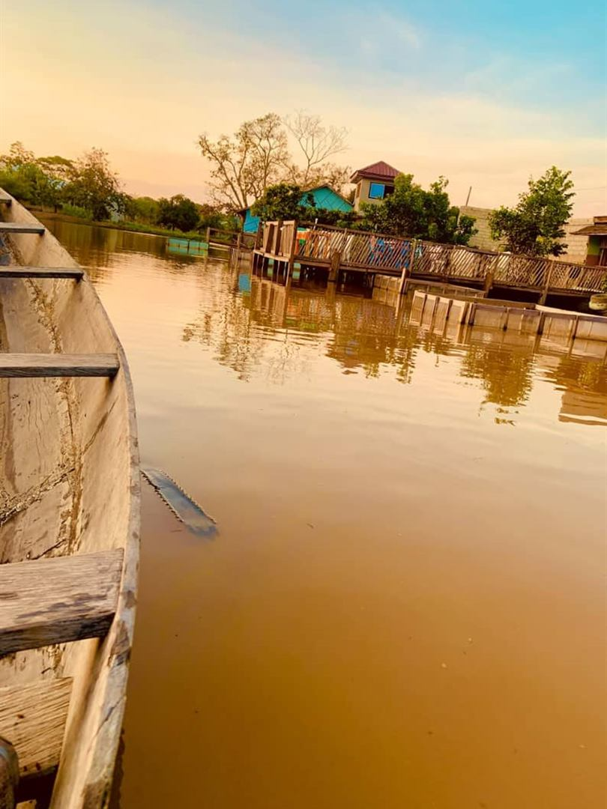
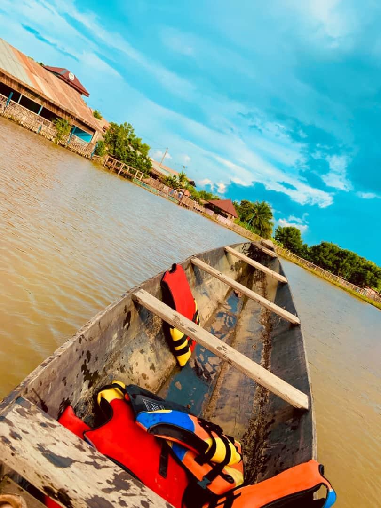
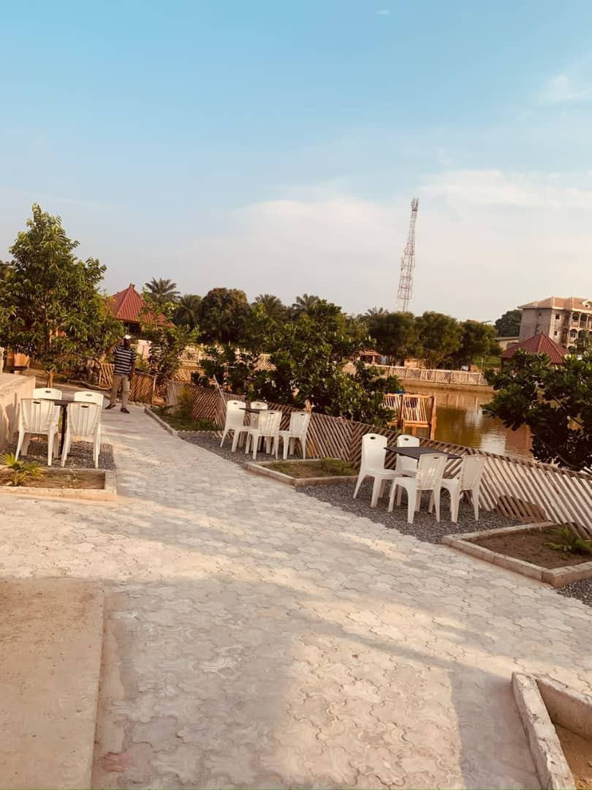

Notre esprit
L’eau, la braise et le temps qui ralentit
Le lac est au cœur de tout. Les tables sont installées au bord de l’eau : on retire ses chaussures et on garde les pieds au frais pendant le repas.
À la carte, les plats du pays : ekwang, koki chaud, ndolè aux crevettes, taro sauce jaune.
Et quand on a bien mangé, on peut partir en pirogue sur le lac.

Pour qui ?
Pour tous ceux qui ont besoin d’une pause
Les familles
Un déjeuner au calme, au bord de l’eau, le week-end.

Les couples
Un dîner face au lac au coucher du soleil.

Les visiteurs
De passage à Bertoua ? Un lieu à découvrir.

Groupes et entreprises
Repas d’équipe et événements, l’espace rien que pour vous.
Nous trouver
Camp-SIC, quartier Nkolbikon
Près de la route et du plus grand centre hospitalier de l’Est-Cameroun.
Ce soir ou ce week-end
On vous garde une table au bord de l’eau ?
Écrivez-nous sur WhatsApp : nous vous répondons pour confirmer votre table, votre groupe ou votre événement.